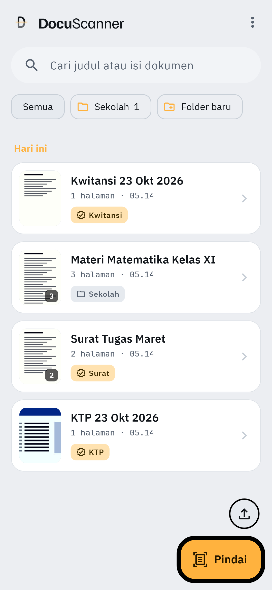
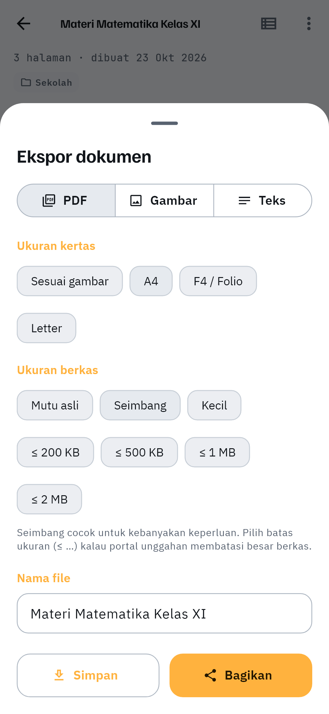
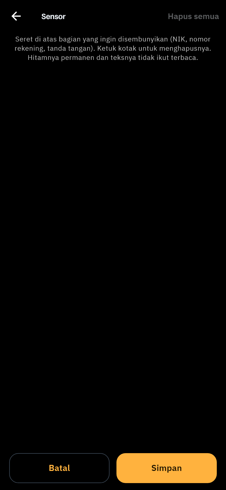

Pemindai dokumen · luring sepenuhnya
Pindai, luruskan, baca tulisannya, dan jadikan PDF yang bisa dicari — semuanya diproses di perangkat. Tidak ada akun, dan tidak ada halaman yang diunggah ke server mana pun.

Fitur
Dari kertas miring di atas meja sampai PDF rapi yang bisa dicari — dan tetap jadi milik Anda.
Tepi kertas dikenali otomatis, lalu diluruskan dengan koreksi perspektif — foto miring pun jadi tegak.
Teks dibaca di perangkat dan diindeks penuh, jadi Pustaka bisa dicari dari isi dokumen, bukan cuma judulnya.
Tajam, Abu-abu, dan Hitam-putih dengan ambang adaptif lokal: kertas diputihkan tanpa menghitamkan tulisan.
Tutup NIK, nomor rekening, atau tanda tangan dengan kotak hitam yang tak bisa dikupas — teksnya pun tak terbaca maupun terindeks.
Belah foto buku terbuka jadi dua halaman, pisahkan sebagian halaman ke dokumen baru, gabungkan, dan susun ulang.
PDF yang bisa dicari, JPG, atau teks — dengan batas ukuran berkas supaya muat di portal unggahan yang pelit kuota.
Hasil pindai tak lagi bernama “Pindaian…”. Jenis dokumen dikenali (KTP, Surat, Kwitansi) atau judulnya ditebak dari isi — lengkap dengan tanggal, siap dibagikan.


Bagian yang disensor ditimpa hitam sebelum diekspor dan tidak pernah di-OCR — tak ada lapisan tersembunyi yang bisa dikupas dari PDF, dan teksnya tak ikut tersalin.
DocuScanner memindai, membaca teks, dan menyusun PDF sepenuhnya di perangkat. Dokumen hanya keluar dari ponsel saat Anda sendiri membagikan atau menyimpannya.
Baca Kebijakan Privasi